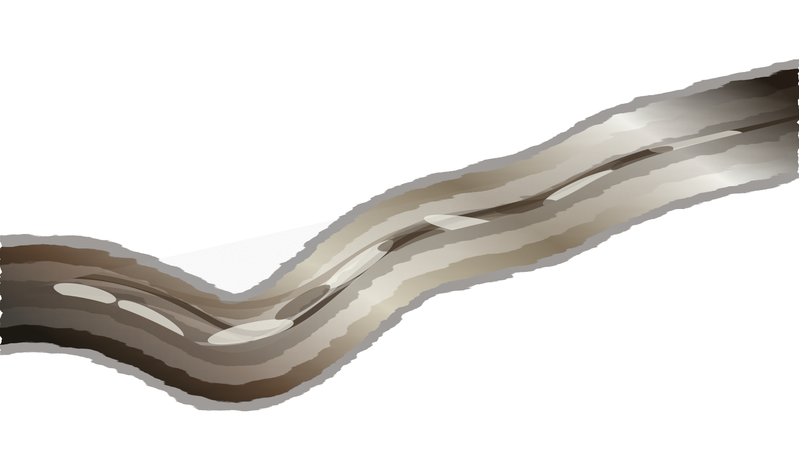
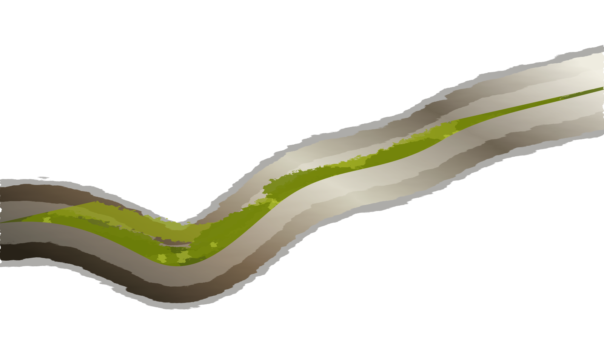

剧本识别
识别场次、时间、地点、角色和冲突，把松散文本整理成镜头骨架。


Interactive moss styling
Move across the branch to reveal living moss, then continue into the studio to build AI video prompts from a script.
创作控制台
制作地图
识别场次、时间、地点、角色和冲突，把松散文本整理成镜头骨架。
生成景别、运动、镜头意图、画面层次和模型可读提示词。
输出三视图提示词、造型规则和角色一致性约束。
形成 Markdown 创作包和 CSV 队列，方便继续进入视频生成工具。
创意系统
海报工作流
视频工作流
安全系统
开源社区格式